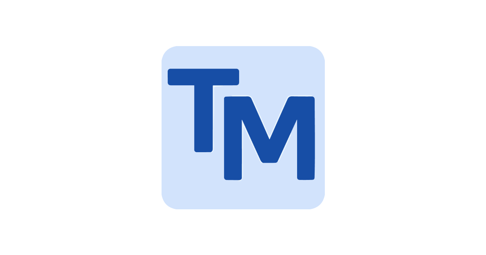
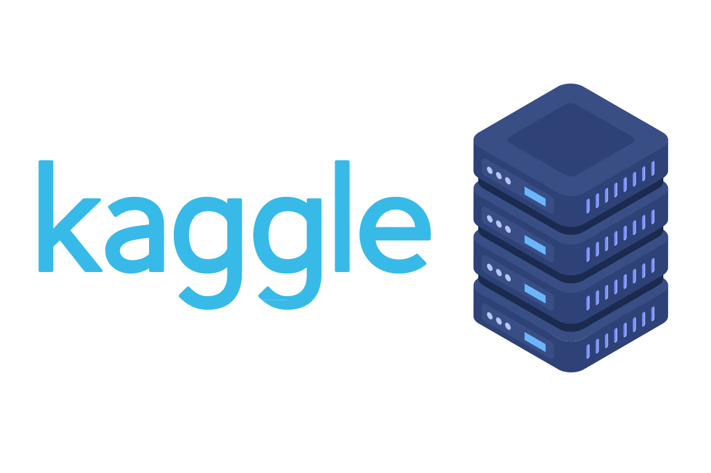
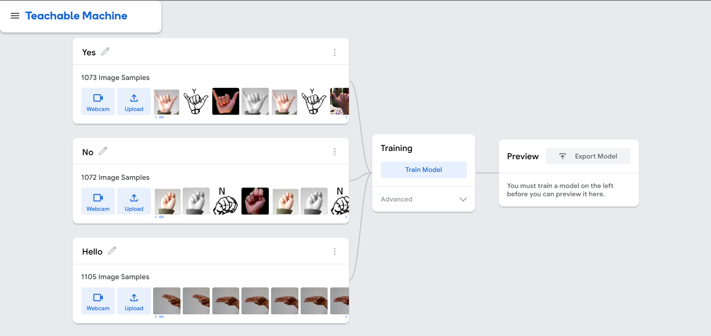
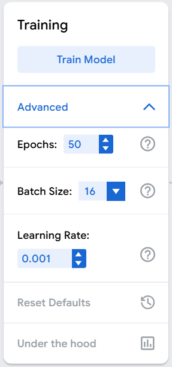
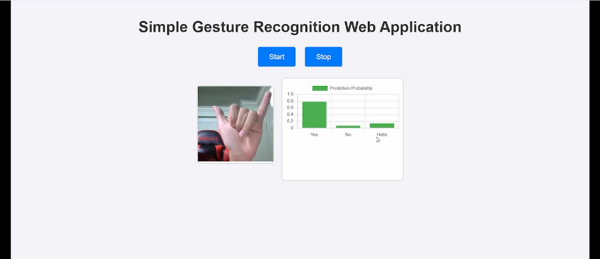

Gesture Recognition Web App
Overview
Developed a web-based gesture recognition application using Teachable Machine and TensorFlow.js to detect specific hand gestures via webcam in real time. The project demonstrates potential in touchless interfaces, gaming controls, virtual reality, and sign language education, emphasizing accessibility and intuitive interaction.


Data Collection
- Sources:
- Captured custom gesture images via Teachable Machine’s webcam tool.
- Augmented dataset with hand gesture images from Kaggle.
- Gestures: “H” (Hello), “Y” (Yes), “N” (No).
- Variations: Recorded under different lighting conditions, angles, and backgrounds to improve robustness.
- Challenges:
- Lighting variability affecting model accuracy.
- Background interference introducing false positives.
- Ensuring diversity in gesture positioning was time-intensive.
Model Training
- Platform: Teachable Machine (CNN architecture pre-configured for image recognition).
- Hyperparameters:
- Learning Rate: Default
- Epochs: 50
- Batch Size: Auto-managed
- Performance: Achieved high training accuracy, with occasional misclassifications under extreme lighting or busy backgrounds.


Application Development
- Integration: Exported trained model and integrated it into a responsive web interface.
- Technologies Used:
- HTML & CSS – UI layout and styling
- JavaScript – Webcam management and prediction handling
- TensorFlow.js – Real-time model execution in the browser
- UI Features:
- Live webcam feed display.
- Real-time gesture prediction with a bar chart showing confidence levels.
Results & Impact
- Delivered a fully functional browser-based AI application capable of detecting gestures without server-side processing.
- Demonstrated feasibility of low-cost, accessible AI solutions that run entirely on the client side.
- Positioned as a foundation for future expansion into multi-gesture recognition, gesture-based navigation, and assistive technologies.
